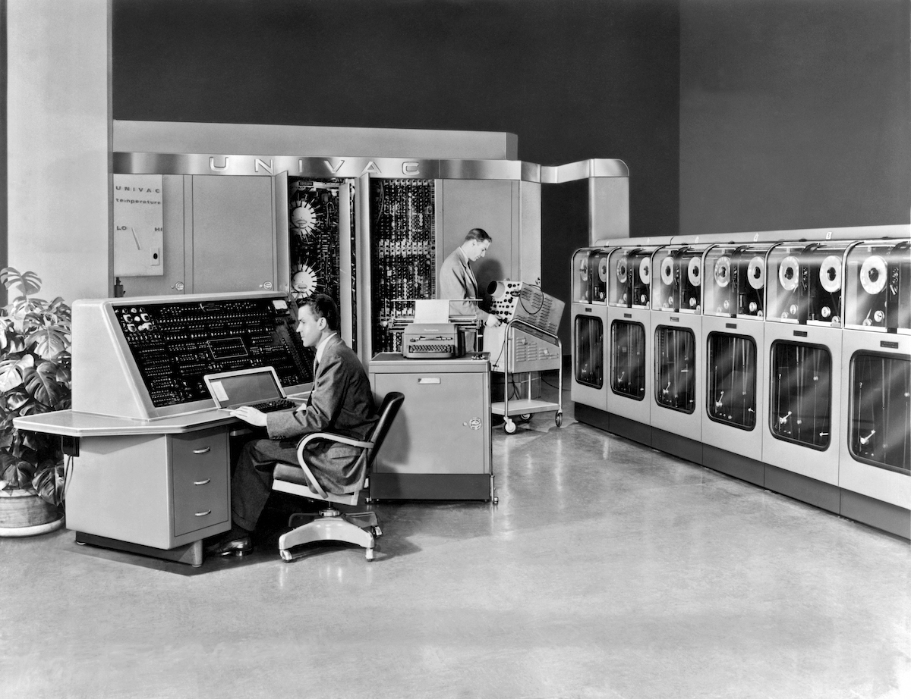

Un ordinateur
Définition
Un ordinateur est un système de traitement de l'information programmable, c'est un concept défini par Alan Turing l'inventeur du premier ordinateur. Source: wikipedia.org
Chronologie des premières machines de calculs
1000 av J.C.Boulier
Première machine à calculer
1642Pascaline
Machine à calculer pour les calculs plus complexes à réaliser avec un Boulier
1801Métier à tisser de Jacquard
Considéré comme l'ancêtre de l'ordinateur. Il fonctionnait avec des cartes perforées pour guider les crochets des métiers à tisser.

1919Machine Enigma
Machine de chiffrement et de déchiffrement, principalement utilisée par les allemands pendant la Seconde Guerre mondiale.

Chronologie des premiers ordinateurs
1936Première génération
Machine de Turing, outil dont le fonctionnement a inspiré l'ordinateur
1951Univac
Premier ordinateur commercial produit
1955Deuxième génération
Premiers transistors

Réplique du premier transistor
1958Circuit intégré
Création du circuit intégré
1963Troisième génération
Premiers ordinateurs utilisant des circuits intégrés
Photo d'un IBM-360
1970Mini-ordinateur
Une innovation qui devient significative à la fin de cette décénnie
Photo d'un HP2100 de 1974
1971Quatrième génération
Premier microprocesseur.

Photo d'un Intel 4004, premier microprocesseur commercialisé
1976Super-calculateur
Premier super-calculateur, le Cray-1 par Seymour Cray.
Les générations
On considère donc plusieurs générations.
- La première génération : où a été créé la Machine de Turing.
- La deuxième génération : qui marque l'arrivée des permiers transistors.
- La troisième génération : où les ordinateurs ont commencé à être composé de circuits intégrés.
- La quatrième génération : marquant les premiers microprocesseurs.
- La cinquième génération : correspondant à aujourd'hui. Aujourd'hui les ordinateurs peuvent voir (reconnaissance faciale...), lire, parler (assistants vocaux...), conduire une voiture (voiture autonome)...